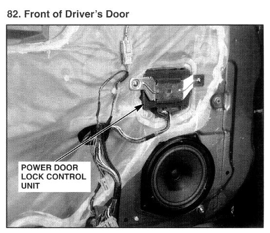

Operation CHARM
: Car repair manuals for everyone.
Home
>>
Acura
>>
1995
>>
Integra (GS-R) L4-1797cc 1.8L DOHC (VTEC)
>>
Repair and Diagnosis
>>
Body and Frame
>>
Locks
>>
Power Locks
>>
Power Door Lock Control Module
>>
Locations
Power Door Lock Control Module: Locations

Front Of Driver's Door